Japan / Shimane / Nishinoshima
Nishinoshima, Shimane: things to do, food and stays
Nishinoshima · Shimane
Nishinoshima
Highlighted on the Shimane map.
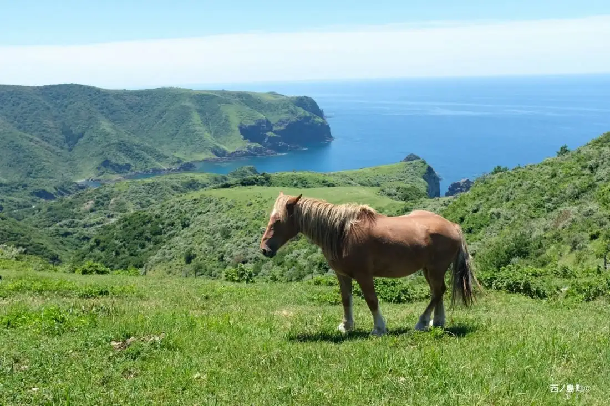
Stay
西ノ島 隠岐シーサイドホテル鶴丸
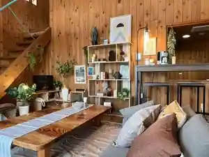
Nishi No Shima Oki Shisaido Hotel Tsurumaru
Okibase kominka Hotel&Cafe
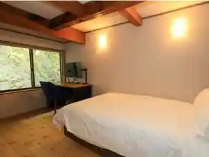
Okibase kominka Hotel&Cafe
Inn in Mita, Nishinoshima with a renovated traditional house and business travelers.
国賀荘
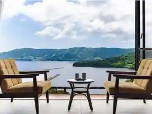
Kuniga So
Inn in Urago, Nishinoshima with scenic views.
ホテル隠岐
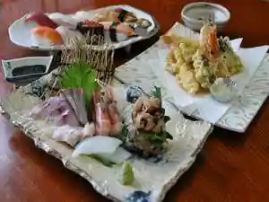
Hotel Oki
Dining
にしわき鮮魚店
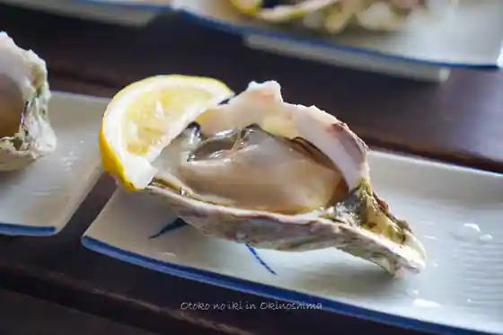
Nishiwaki Sengyo
コンセーユ
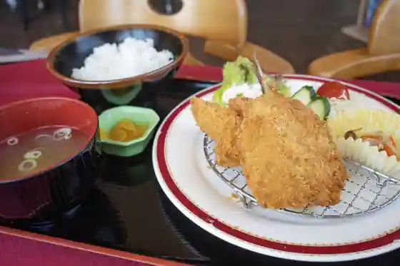
Konseyu
Sailing Coffee
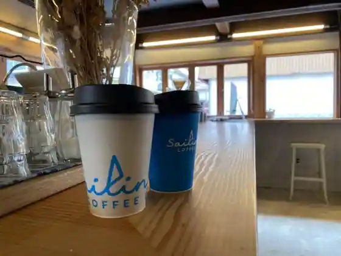
Sailing Coffee
旅館 みつけ島荘
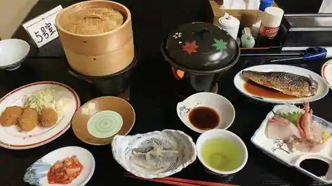
Ryokan Mitsuke Shima So
あすか軽食喫茶
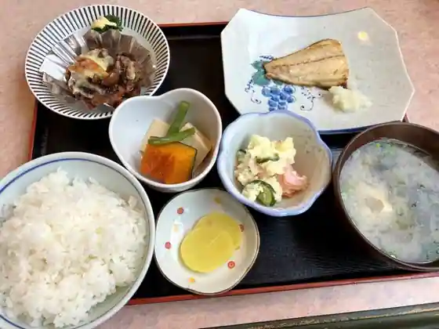
Asuka Keishoku Kissa
あそびとくらしの店 海月堂
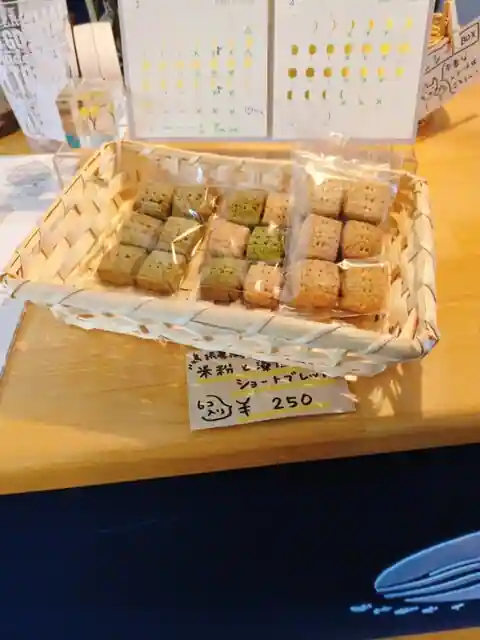
Asobitokurashino Kurage Do
磯四季
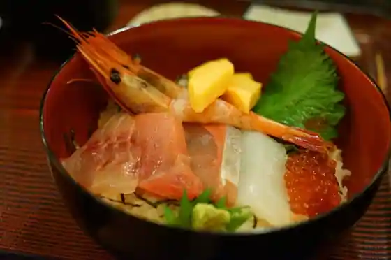
Iso Shiki
隠岐シーサイドホテル 鶴丸
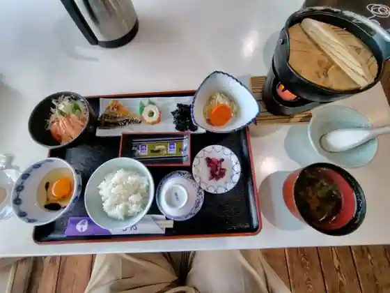
Oki Shisaido Hotel Tsurumaru
めにーでーる 西ノ島店
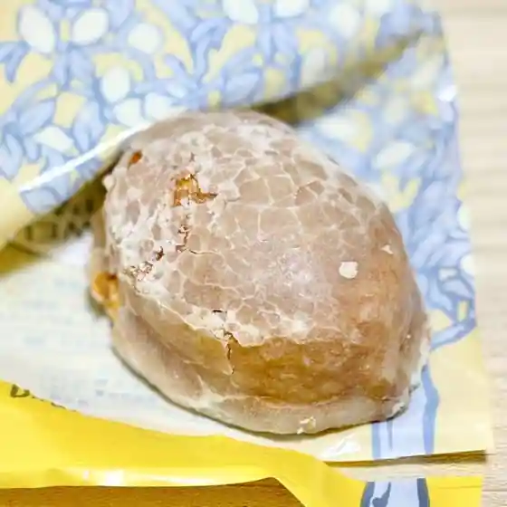
Menideru Nishi No Shima
優心
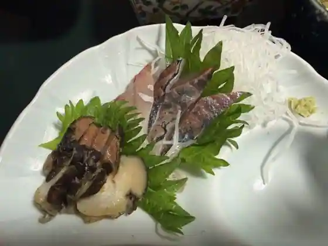
Yu Kokoro
三力丸
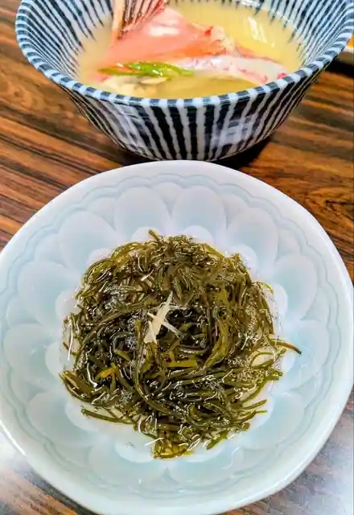
San Rikimaru
港のお食事処 ドンキー
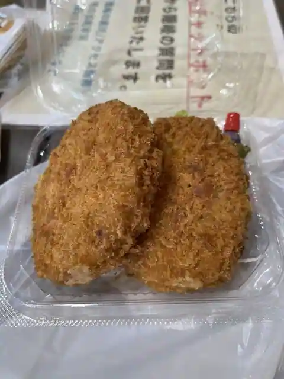
Minato No Shokuji Tokoro Donki
民宿・かふぇ春
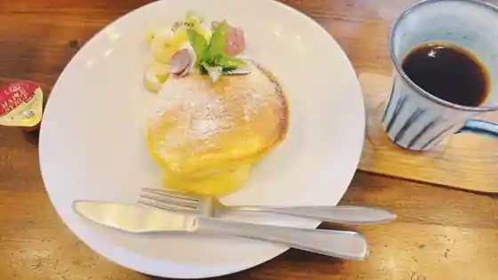
Minshuku Cafe Haru
おき龍宮堂お食事処
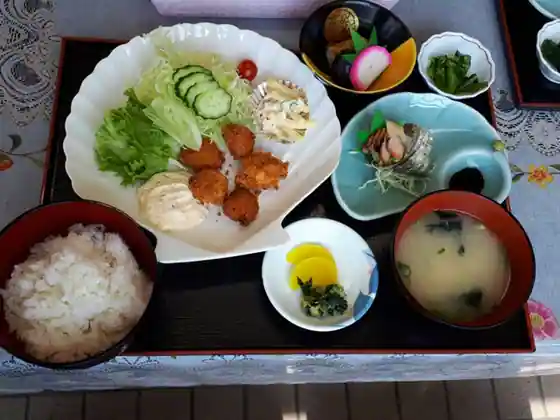
Oki Ryugu Do O Shokuji Tokoro
ごはん屋キッチン まう
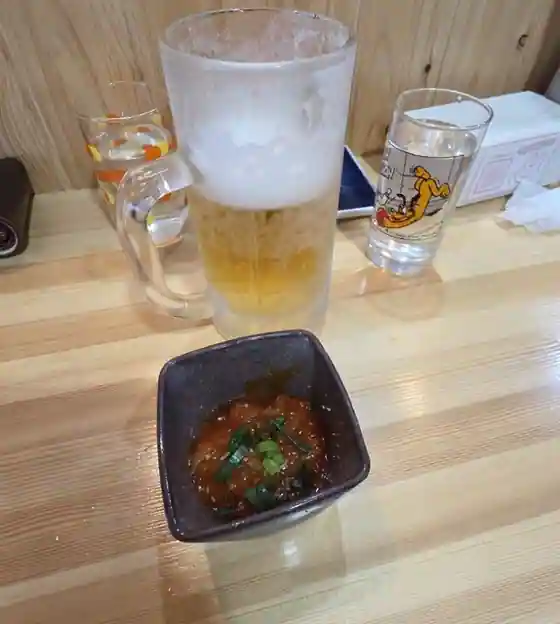
Gohan Ya Kitchen Mau
TAKUHI.
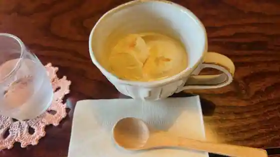
TAKUHI.
はな
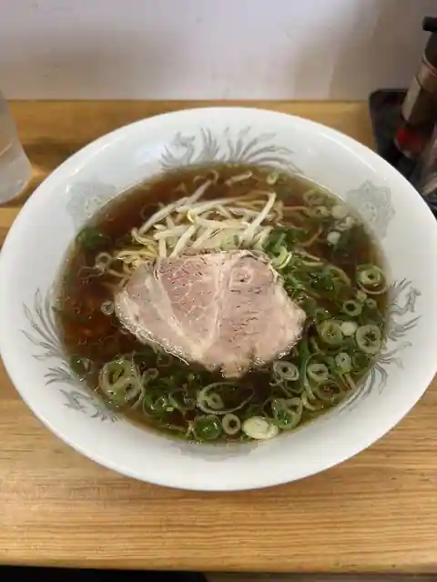
Hana
青とあいら
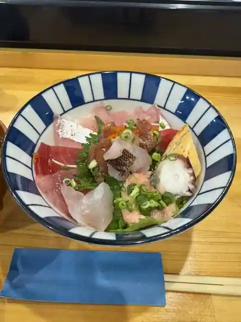
Ao Toaira
G.G BAKERY
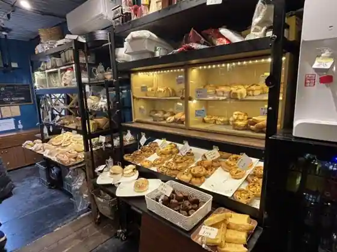
G. G BAKERY
お食事処善
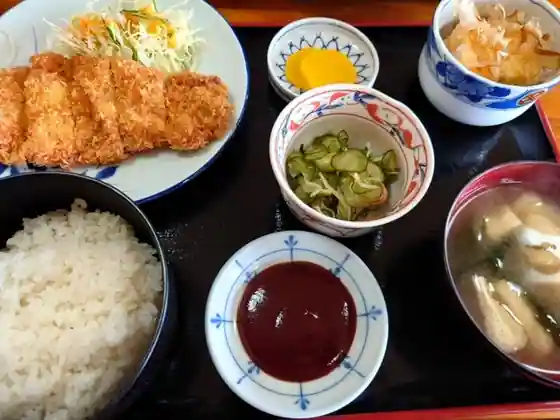
O Shokuji Tokoro Zen
ながと
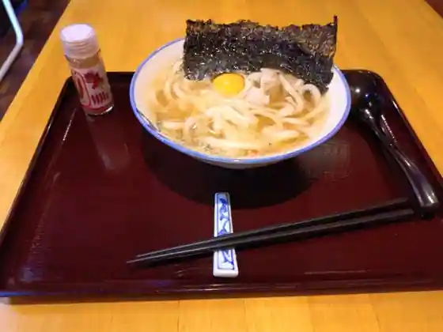
Nagato
Sights
Kuniga Coast
Yura Hi Onna Shrine
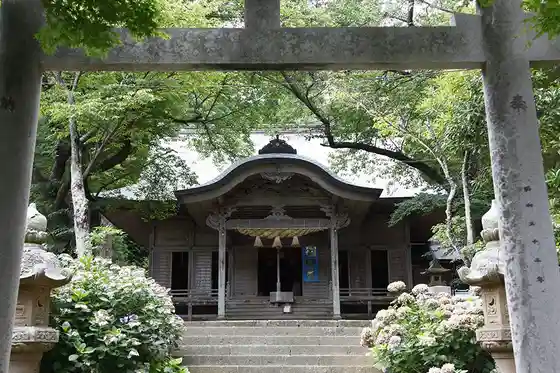
Seirei Fune
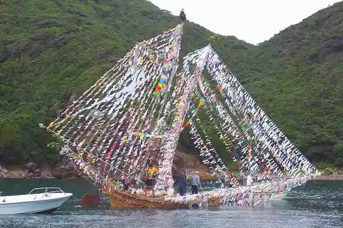
Kuroki Gosho Shi
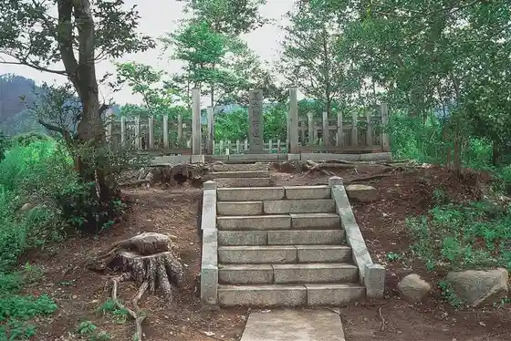
Yaki Hi Shrine
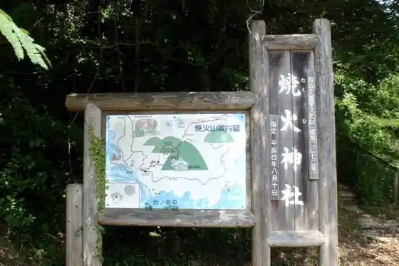
Heki Kaze Kan
Nishinoshima Furusato Kan
Kuniga Meguri Teikikanko Fune
Club no A Oki Nishinoshima B&G Kaiyo Center
Nishinoshima General Park
Mita Hachiman Shrine Dengaku
Funehiki Unga
Sotogahama Beach
Kuniga Kaichu Park
Mimi Ura Campground
Yaki Hi Kama
Minshuku San Rikimaru
Nishinoshima Town Hall